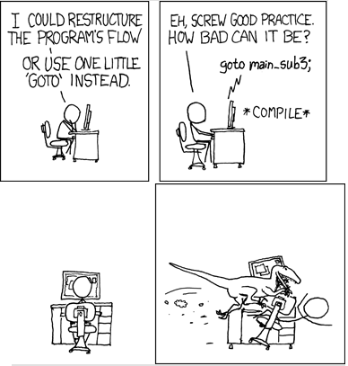

Alberto Vara
Descargar presentación/Codigo fuente
github.com/avara1986/python-talks/2022_10_pyconesMotivacion
Motivacion
Escenario
- Instrumentar código
- Reducir al mínimo el tiempo extra (overhead)
- Python llega a un punto que no es optimo
Escenario
- Instrumentar código
- "Wrappear" codigo
- Monkey Patching
- Reducir al mínimo el tiempo extra (overhead)
- Python llega a un punto que no es optimo